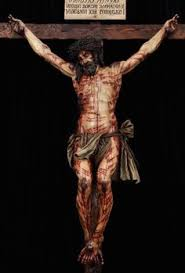

Enjoy The Moments....
-

It is celebrated in commemoration of the 'passion of Christ' that is the death of Christ on the cross followed by His burial. On this day the faithful devotees usually keep a fast. They visit seven churches reciting the fourteen Stations of the Cross. This day is usually spent in solemn prayerful devotion.

Many Christians around the world observe Good Friday on the Friday before Easter Sunday. It commemorates Jesus Christ's Passion, crucifixion, and death, which is told in the Christian Bible. It is the day after Maundy Thursday. Good Friday commemorates Jesus' death on the cross.
Red or purple are appropriate for Palm Sunday. During Holy Week, purple is used until the church is stripped bare on Maundy Thursday; the church remains stripped bare on Good Friday and Holy Saturday, though in some places black might be used on those days.
By this, we also know that Christ's death and resurrection could not have happened before the spring equinox, which on modern calendars is always March 21 or 22. But we need the year of the Passover on which Christ died and rose. Roman records help here.